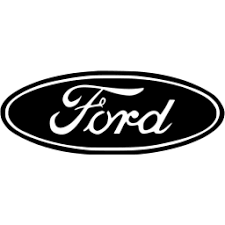

Ford
История
Ford Motor Company, «Форд мотор компани» — американская
автомобилестроительная компания. Четвёртый в мире производитель
автомобилей по объёму выпуска за весь период существования.
Штаб-квартира компании располагается в городе Дирборн в пригороде
Детройта в штате Мичиган.
В числе крупнейших компаний США по размеру выручки в 2022 году
(список Fortune 500) Ford Motor заняла 22-е место, а среди
крупнейших компаний мира (список Fortune Global 500) — 53-е
место.
В списке крупнейших публичных компаний мира Forbes Global 2000 за
2022 год Ford Motor заняла 60-е место.
Ford Flex 2015
Кузов - Внедорожник/Кроссовер
Двигатель - Газ/Бензин
Привод - Полный
Коробка передач - Автомат
Водительский стаж - Более 5 лет
Время владения - 2-3 года
Отзывы покупателей
Хорошее, динамичное, не дорогое в обслуживании авто! Садишься в него
и не хочется выходить из него, стоимость обслуживания до 5 тыс. на
10 тыс.км!
Расход газа до 17 л по городу, трасса 12-13л. это нормально для
мотора 3.5л.!
Одним словом ездю и кайфую, те кто не понимают что это за авто,
рекомендации – покупайте не пожалеете!!!
Наверх
Toyota
История
Toyota Motor Corporation, кратко: Toyota [тоёта], на русском пишется
Тойота — японская автомобилестроительная корпорация,
также предоставляющая финансовые услуги и имеющая несколько
дополнительных направлений в бизнесе. Является крупнейшей
автомобилестроительной публичной компанией в мире,
а также крупнейшей публичной компанией в Японии. Главный офис
компании находится в городе Тоёта, префектура Айти, Япония.
В списке крупнейших публичных компаний мира Forbes Global 2000 за
2022 год Toyota Motor заняла 10-е место, а в списке Fortune Global
500 — 13-е место.
Toyota Camry 2002
Кузов - Седан
Двигатель - Бензин
Привод - Передний
Коробка передач - Ручная/Механика
Водительский стаж - Более 5 лет
Время владения - Более 5 лет
Отзывы покупателей
2,4 бензиновый двигатель – прост в обслуживании и очень надежен в
моем случае, на механической коробке передач.
Первые 700 тыс. прошедших совсем не брал масла потом стал доливать.
По кузову – слабый город пороги в задней части, у арок, рамка
лобового стекла.
Передняя подвеска очень надежна. Если придется менять салейнтблоки
нижних рычагов – оригинальных нет, аналоги ходят по 10 тыс.
Наверх

BMW
История
BMW AG — немецкий производитель автомобилей, мотоциклов, двигателей,
а также велосипедов. Более 45 % акций принадлежит семье Квандт.
Председателем правления компании является Оливер Ципсе. Главный
дизайнер — Йозеф Кабан.
В списке крупнейших публичных компаний мира Forbes Global 2000 за
2025 год BMW Group заняла 81-е место, а в списке Fortune Global 500
— 49-е место.
Девиз компании — «Freude am Fahren», с нем. — «С удовольствием за
рулём».
Для англоязычных стран был придуман также девиз «The Ultimate
Driving Machine» (с англ. — «Идеальная машина для вождения»).
BMW X5 2001
Кузов - Внедорожник/Кроссовер
Двигатель - Дизель
Привод - Полный
Коробка передач - Автомат
Водительский стаж - Более 5 лет
Время владения - 2-3 года
Отзывы покупателей
Всегда мечтал о х5, после е34 и е46 понял что BMW это мое. Главное
не жалеть денег – не брать по дну рынка, это будет говно.
Ищите полную комплектацию! Проекция так как и доводчики дверей
кажутся не нужны, но после владения автомобиля
с ними понимаешь что очень крутые функции.
Наверх